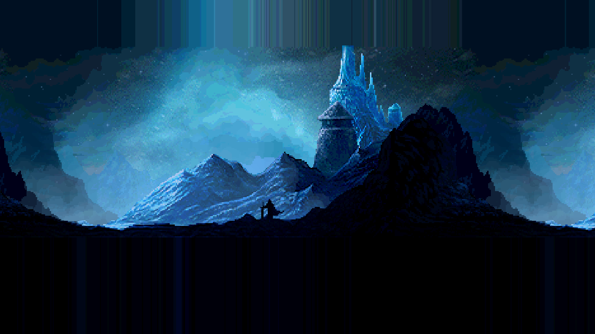
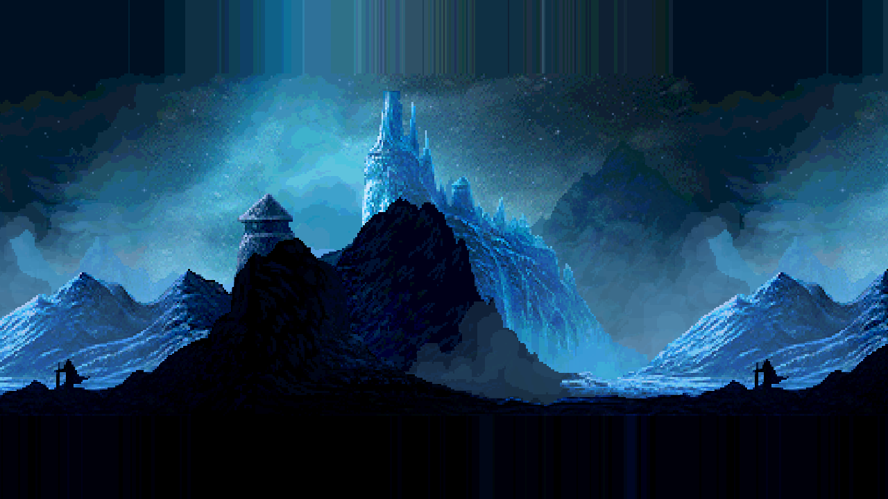
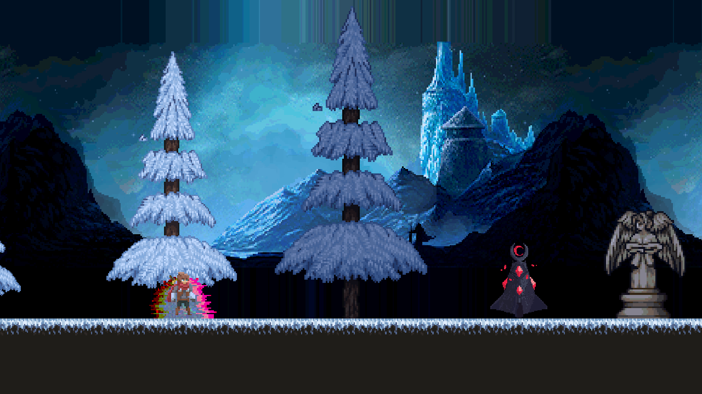
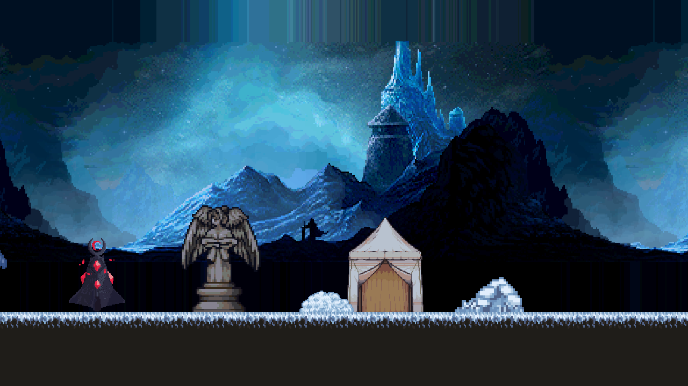
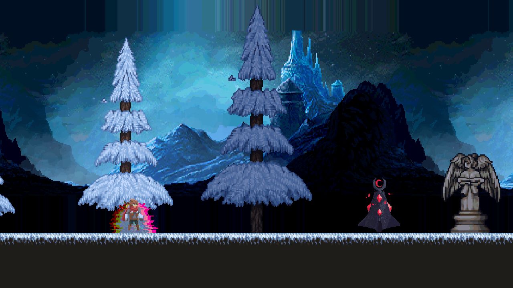
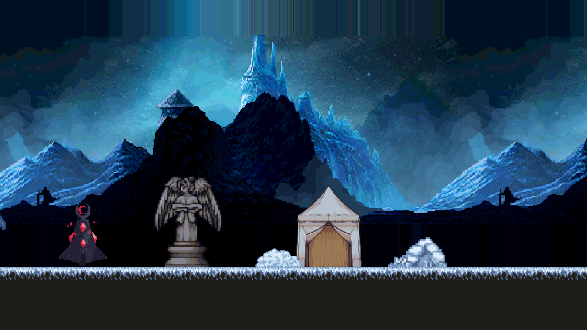

Antes, abajo

Antes, 6 metros más arriba

Después, abajo

Después, 6 metros más arriba
Semana 8. Parallax y mecánicas
Nombre: ______________________ Fecha: 4 de octubre
Nombre: ______________________
Hacer más notorio el efecto parallax del fondo, de modo que se note la diferencia de profundidad entre capas. Lo apliqué al nivel de nieve de mi juego Warrior, hecho en Unity.
El fondo tiene siete capas, pero se movían casi a la misma velocidad: la más cercana solo un 24 % de lo que se mueve el suelo y el cielo un 1,5 %. Además, en vertical todas las capas se movían igual. Por eso el fondo parecía una sola imagen.
Movimiento de cada capa comparado con el suelo (100 %):
| Capa (de lejos a cerca) | Antes | Después |
|---|---|---|
| Cielo | 1,5 % | 3,5 % |
| Montañas lejanas | 5 % | 14 % |
| Castillo de hielo | 8 % | 23 % |
| Neblina lejana | 11 % | 32 % |
| Montañas medias | 16 % | 44 % |
| Neblina cercana | 20 % | 52 % |
| Montañas cercanas | 24 % | 63 % |
| Suelo y personaje | 100 % | 100 % |
| Primer plano (pinos delante) | 145 % | 170 % |
En vertical, antes todas las capas se movían un 5 % distinto que la cámara; ahora va de 5,5 % en el cielo a 24 % en las montañas cercanas.
Valores nuevos en ParallaxCueva.cs, editables desde el Inspector:
// Multiplica lo que cada capa se queda atras respecto a la camara. // 1 = como estaba; mas = las capas se separan mas entre si. [Range(0f, 2f)] public float intensidad = 1f; // Parallax vertical por capa: al saltar o caer, las capas cercanas se quedan // mas atras que las lejanas (0 = todas suben y bajan igual, como antes). [Range(0f, 1f)] public float profundidadVertical;
Cálculo de la posición de cada capa en cada fotograma. Cuanto más cercana es la capa, más se queda atrás respecto a la cámara y más se mueve en pantalla:
public void Colocar(Vector3 c, float dt)
{
for (int i = 0; i < capas.Length; i++)
{
Capa capa = capas[i];
if (capa.raiz == null || capa.ancho <= 0f) continue;
recorrido[i] += capa.deriva * dt;
// Cuanto se queda atras la capa: 0 = pegada a la camara, 1 = como el suelo.
float atrasoX = Mathf.Clamp01((1f - capa.seguimiento) * intensidad);
float atrasoY = Mathf.Clamp01((1f - seguimientoVertical)
+ (1f - capa.seguimiento) * profundidadVertical);
// Centrado en la camara: las copias cubren lo mismo a cada lado.
float desplazado = c.x * atrasoX - recorrido[i];
float x = c.x - Mathf.Repeat(desplazado + capa.ancho * 0.5f, capa.ancho) + capa.ancho * 0.5f;
float y = inicioCamara.y + (c.y - inicioCamara.y) * (1f - atrasoY);
capa.raiz.position = new Vector3(x, y, capa.raiz.position.z);
}
}
Cámara movida 10 metros a la derecha. Antes, el fondo se desplazaba en bloque; después, las montañas cercanas pasan por delante del castillo y el cielo casi no se mueve.
 Antes, posición inicial |
 Antes, 10 metros a la derecha |
 Después, posición inicial |
 Después, 10 metros a la derecha |
Cámara subida 6 metros. Antes, todo el fondo bajaba junto; después, las montañas cercanas bajan más que el castillo y el cielo.
Antes, abajo |
 Antes, 6 metros más arriba |
Después, abajo |
 Después, 6 metros más arriba |
Al aumentar la diferencia de velocidad entre capas y añadir el parallax vertical, el fondo de la nieve se percibe con más profundidad, tanto al caminar como al saltar.